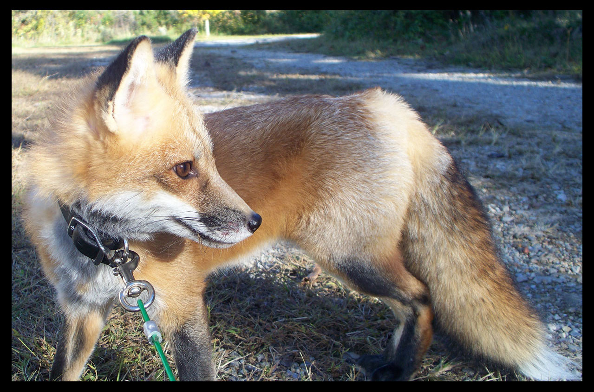

Thinking Outside The Fox
Adoption
It is important to note that before you proceed with adopting a fox you must check the laws of your state and city to make sure that it is legal to own this animal where you live.
- www.saveafox.org/fox-adoption-application